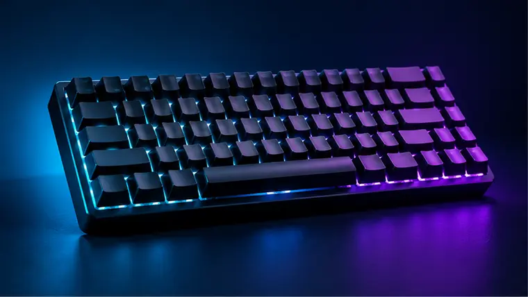
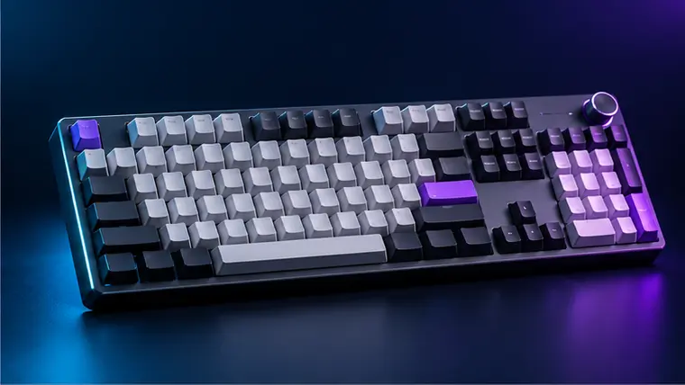
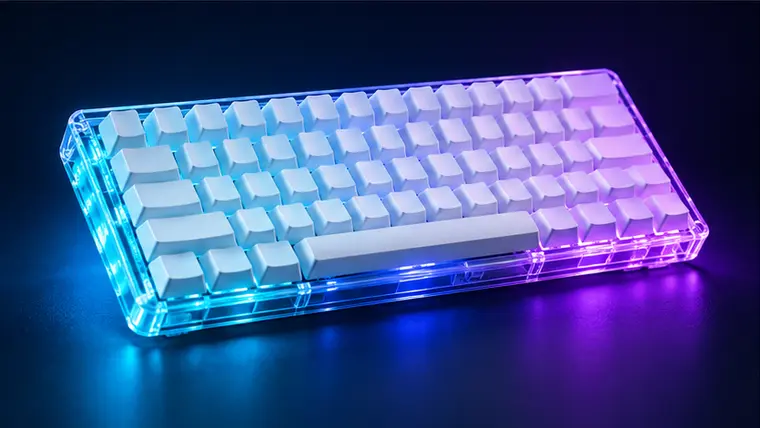
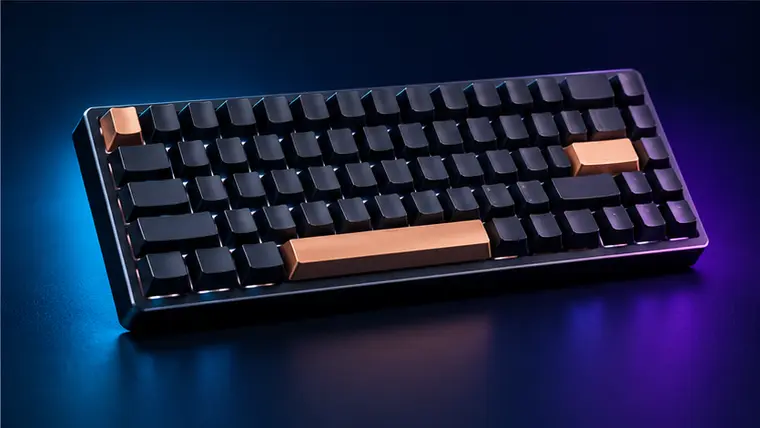

Low-profile wireless
Logitech G515 LIGHTSPEED TKL
A slim tenkeyless option for a clean desk and cable-free play.
- Who it suits is explained clearly
- Current price shown on Amazon
Gaming keyboards
Choose by size, switch feel and connection—not RGB alone.

Low-profile wireless
A slim tenkeyless option for a clean desk and cable-free play.

Compact wired pick
A straightforward TKL mechanical keyboard with an aluminium body.

Premium performance
Adjustable actuation suits players who want fine control over key response.

Value mechanical
A simple wired layout that is a sensible first mechanical keyboard.
Learn before buying
Layout, switches and features that matter.
Read guide GuideChoose by grip, shape and weight.
Read guide GuideComfort and compatibility without overspending.
Read guide GuideThe upgrades that make a real difference.
Read guide